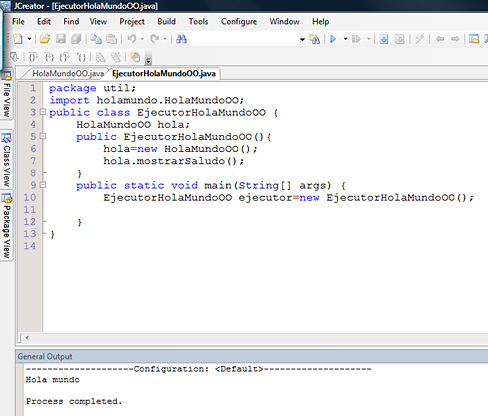
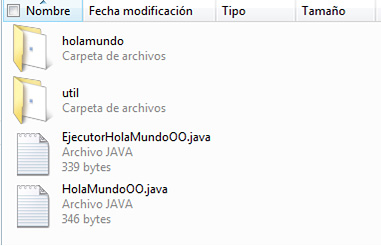

Curso de Java
Desde cero hasta conexiones con bases de datos MySQL
Curso de Java: Contenido
Iniciación: página 14
[ 11, 12, 13, 14, 15, 16, 17 ]
Iniciación al lenguaje Java
Ejecución y flujo de datos
Ejecución
Falta decir que en toda aplicación Java debe haber una clase que tenga un método main que es el primero que se ejecuta. La clase que hemos creado no lo tiene porque no es su responsabilidad, si nos apegamos al proceso de abstracción según el cual la diseñamos. Para eso haremos otra clase llamada EjecutorHolaMundoOO cuya responsabilidad será correr el programa y que tendrá como propiedad un objeto de la clase HolaMundoOO. Esto nos servirá como práctica de sintaxis y para analizar el flujo de datos en Java.
Hagámoslo por pasos, ámbito por ámbito:
1. Empaquetamos en util, importamos HolaMundoOO y declaramos la clase:
package util;
import holamundo.HolaMundoOO;
public class EjecutorHolaMundoOO {
}
2. Creamos una propiedad del tipo o clase HolaMundoOO con el identificador hola:
package util;
import holamundo.HolaMundoOO;
public class EjecutorHolaMundoOO {
HolaMundoOO hola;
}
3. Añadimos los métodos:
3.1 Agregamos el constructor en el que inicializamos la propiedad hola e invocamos el método mostrarSaludo() de dicho objeto, utilizando el punto(.), que es el metacaracter que nos permite invocar los atributos y los métodos de los objetos:
package util;
import holamundo.HolaMundoOO;
public class EjecutorHolaMundoOO {
HolaMundoOO hola;
public EjecutorHolaMundoOO(){
hola=new HolaMundoOO();
hola.mostrarSaludo();
}
}
3.2 Agregamos el método main. Ni la palabra reservada static ni lo escrito en los paréntesis del método debe inquietarnos. Por el momento, basta con saber que la sintaxis es rigurosa. El método que ejecuta la aplicación debe escribirse así, lo único que cambia es el contenido del bloque de código:
package util;
import holamundo.HolaMundoOO;
public class EjecutorHolaMundoOO {
HolaMundoOO hola;
public EjecutorHolaMundoOO(){
hola=new HolaMundoOO();
hola.mostrarSaludo();
}
public static void main(String[] args) {
EjecutorHolaMundoOO ejecutor=new EjecutorHolaMundoOO();
}
}
En JCreator, en un archivo vacío llamado igual que la clase (EjecutorHolaMundoOO) y que debe estar en el mismo subdirectorio que el HolaMundoOO.java, escribimos el código; Compilamos y ejecutamos el programa, con lo que debemos obtener el siguiente resultado:

La estructura de directorios debe presentar los archivos .java y los dos subdirectorios de los paquetes dentro de los cuales debe estar cada uno de los archivos .class:
